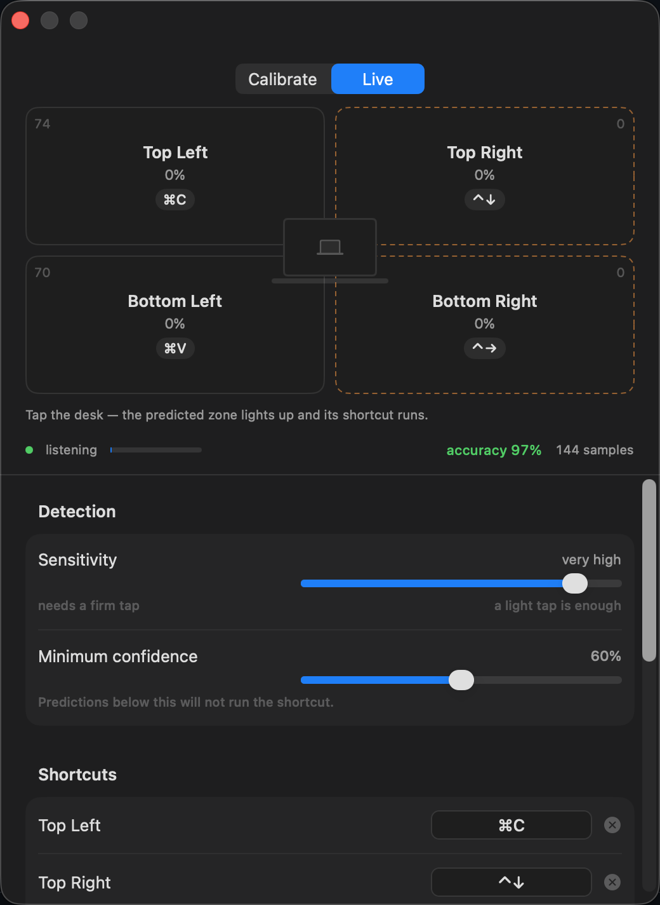
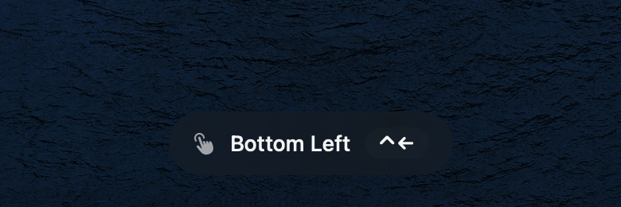

The mic hears the hit
A knock is a broadband transient. The detector high-passes the stream, catches the onset and freezes a 200 ms window around it.
macOS menu bar app · free & open source
Tap Spaces listens for the sound of a knock, works out which corner of the desk you hit, and fires the shortcut you bound to that spot. Everything runs on-device — audio is never recorded or sent anywhere.
Tap anywhere on the desk
A knock is a broadband transient. The detector high-passes the stream, catches the onset and freezes a 200 ms window around it.
Every point on your desk rings differently. 56 acoustic features — spectrum, decay, resonance — are matched against your calibration taps.
The zone's key combo is posted to whatever app is frontmost. Default bindings switch desktops and open Mission Control — rebind them to anything.
Audio lives in memory for a fifth of a second, becomes 56 numbers, and is gone — nothing is recorded, nothing leaves the Mac. The only thing the app ever asks the internet is whether a newer version exists.
Each corner of the desk holds one binding — including combos macOS reserves for itself, like ⌃← and ⌘⇥.
Tap each zone 20–30 times, watch the accuracy number climb. Leave-one-out cross-validation, honestly reported.
No Dock icon, no window in your way. A quiet status item that tells you the model's accuracy at a glance.
Developer ID signature, Apple notarisation, hardened runtime. Opens without a Gatekeeper warning.
Swift, no dependencies, every DSP decision documented in the code. Read it, build it, bend it.


Calibration board, live confidence per zone, and the toast that confirms every fired shortcut.
# add the tap and allow it
brew tap adilmustafayilmaz/tap
brew trust adilmustafayilmaz/tap
# install
brew install --cask tap-spaces
Needs macOS 14 or newer. On first run the app walks you through its two
permissions: Microphone, to hear the taps, and Accessibility, to press
the keys. Already installed? brew upgrade --cask tap-spaces.